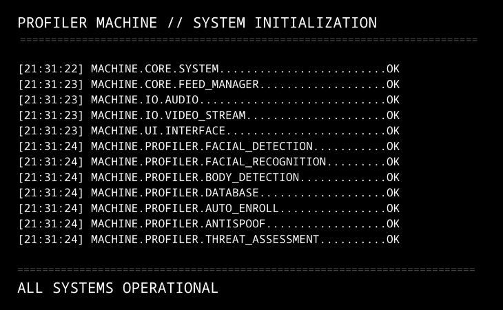
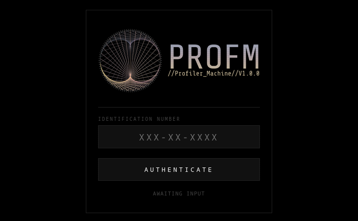

profiler-machine on GitHub
A desktop surveillance system: point it at a camera feed and it detects, recognises and tracks people in real time, with a mobile web interface for monitoring it remotely.
Real-time computer vision on consumer hardware: InsightFace for recognition, ByteTrack to hold an identity when someone walks behind a pillar, and anti-spoofing so a printed photo doesn't fool it.

